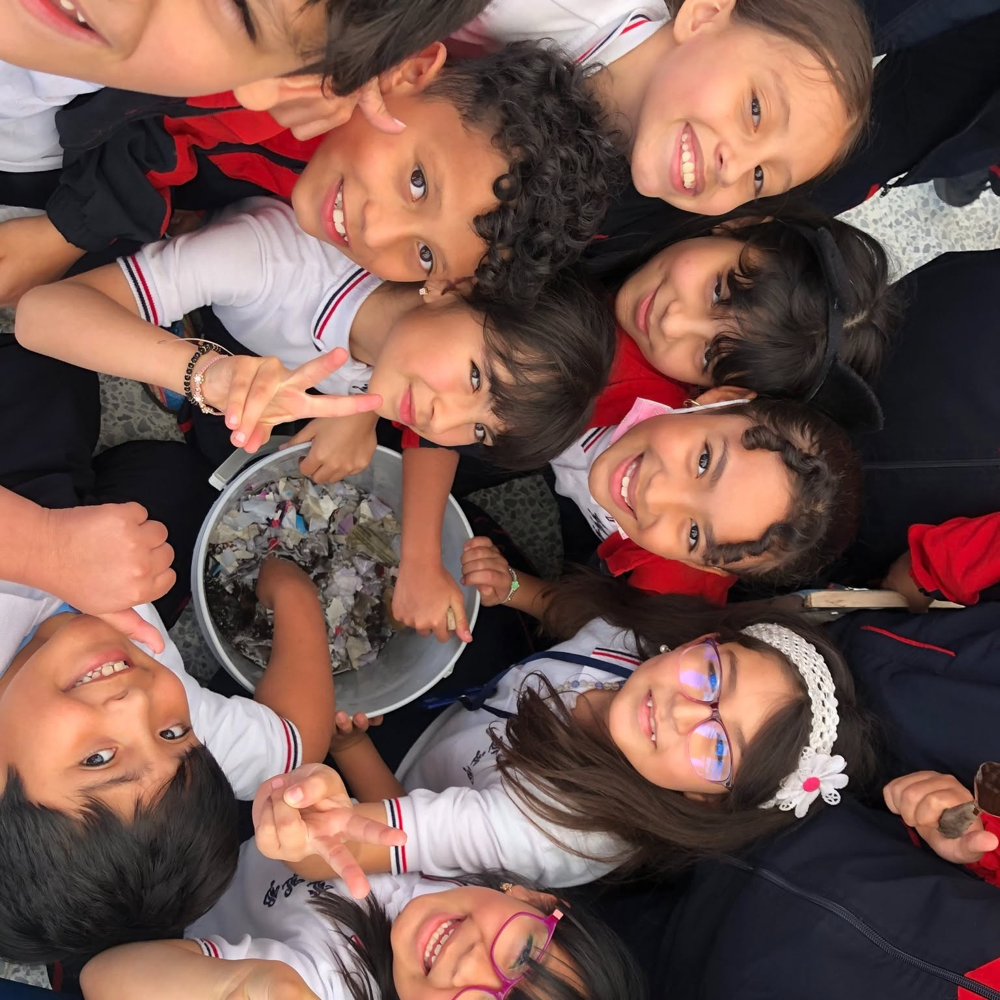

Bases académicas
Fortalecimiento de las habilidades esenciales para continuar aprendiendo.
Durante la Primaria acompañamos a nuestros estudiantes en la construcción de bases académicas, humanas y sociales que fortalecen su curiosidad, autonomía y deseo de aprender.
Cada experiencia fortalece el conocimiento, la creatividad y la confianza.
Fortalecimiento de las habilidades esenciales para continuar aprendiendo.
Experiencias que acercan a los estudiantes al uso y comprensión de una segunda lengua.
Aprendizajes que estimulan la observación, la investigación y el pensamiento científico.
Desarrollo académico, emocional, social, artístico y deportivo.

La Educación Primaria es una etapa fundamental en la que los estudiantes consolidan conocimientos, desarrollan hábitos de estudio y fortalecen habilidades para comunicarse, resolver situaciones y trabajar con los demás.
Mediante experiencias académicas y formativas, acompañamos su crecimiento respetando los diferentes ritmos de aprendizaje y promoviendo una participación cada vez más autónoma.
Desarrollo de habilidades comunicativas, matemáticas y científicas.
Fortalecimiento de la responsabilidad, la autonomía y los hábitos de aprendizaje.
Formación basada en valores, convivencia y trabajo colaborativo.
El aprendizaje se fortalece cuando los estudiantes observan, preguntan, experimentan, crean y encuentran nuevas maneras de expresar lo que comprenden.
Fortalecemos el acercamiento a una segunda lengua mediante actividades que favorecen la escucha, la expresión y la comprensión.
Promovemos la observación, la formulación de preguntas y la comprensión del entorno mediante experiencias científicas y actividades de exploración.
Acercamos a los estudiantes a herramientas tecnológicas, robótica y programación para estimular la lógica, la creatividad y la resolución de problemas.
Creamos espacios para comunicar ideas, emociones y talentos mediante diferentes formas de expresión artística y cultural.
Desde los primeros años, los estudiantes participan en actividades académicas, culturales e institucionales que complementan su formación y les permiten compartir sus conocimientos, habilidades e intereses.
Estas experiencias hacen parte de la vida institucional y pueden involucrar diferentes niveles académicos.
Los eventos escolares fortalecen la creatividad, la comunicación, el trabajo en equipo y el sentido de pertenencia.
La formación de nuestros estudiantes integra el conocimiento con el desarrollo de valores, habilidades sociales, creatividad, bienestar y participación.
Promovemos el respeto, la responsabilidad, la empatía y la construcción de relaciones positivas.
Los estudiantes aprenden a escuchar, aportar ideas y alcanzar objetivos junto a sus compañeros.
El deporte favorece el bienestar, la disciplina, la coordinación y la participación.
Impulsamos la imaginación y la búsqueda de diferentes soluciones para cada desafío.
Conoce nuestra propuesta educativa y descubre cómo acompañamos el desarrollo integral de cada estudiante.